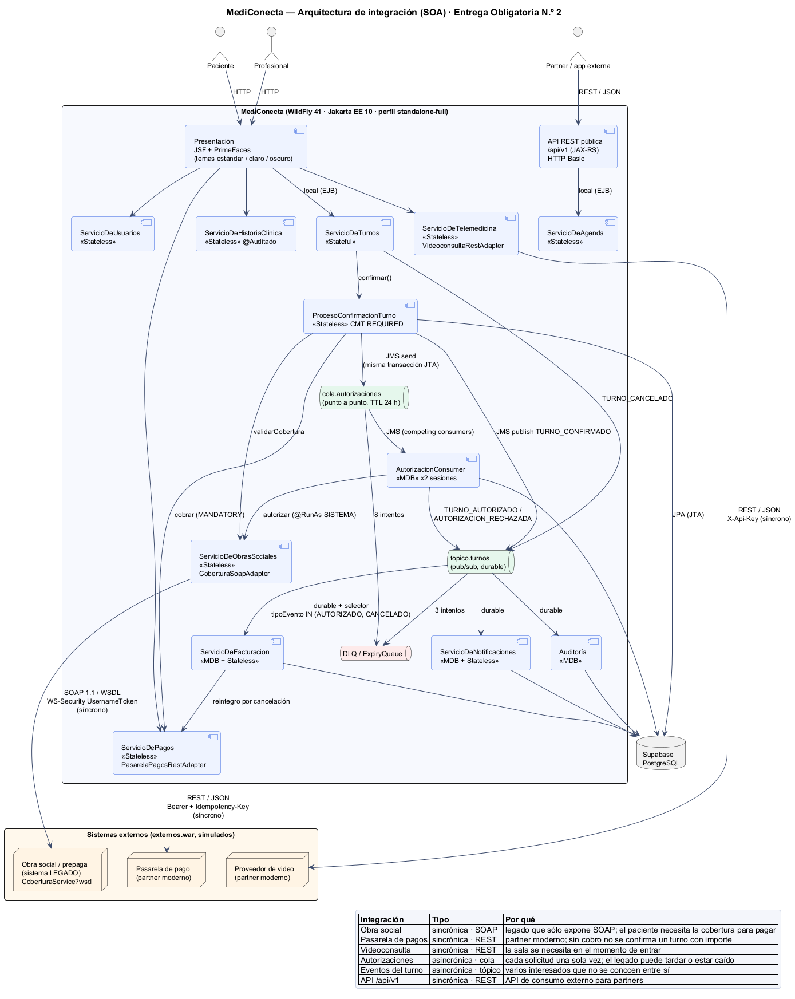
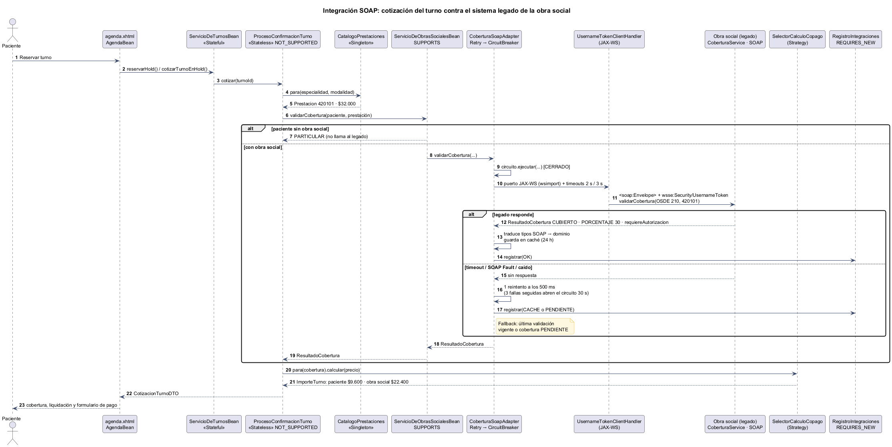
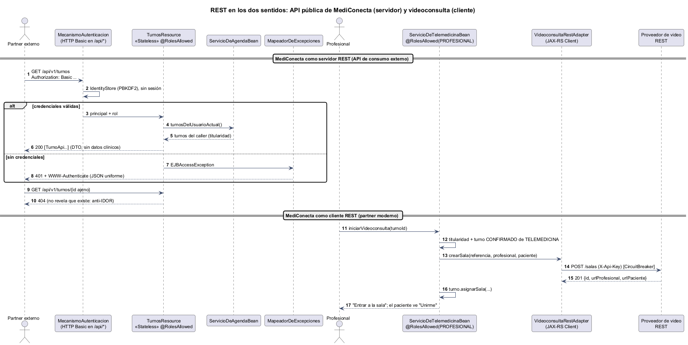
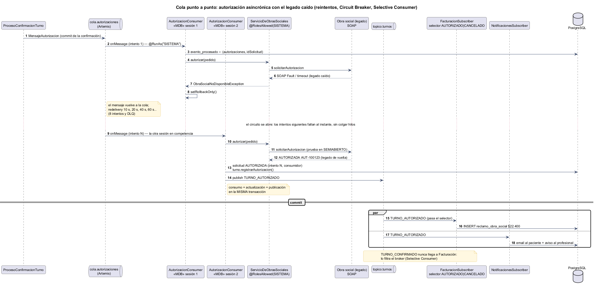
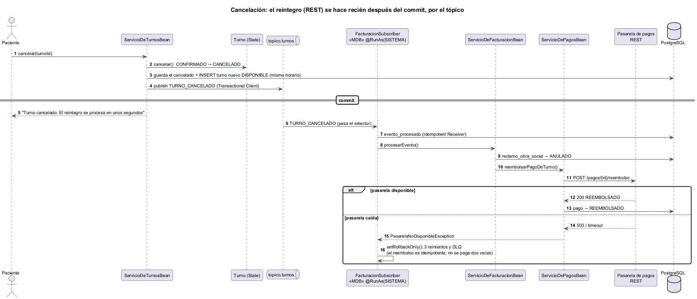
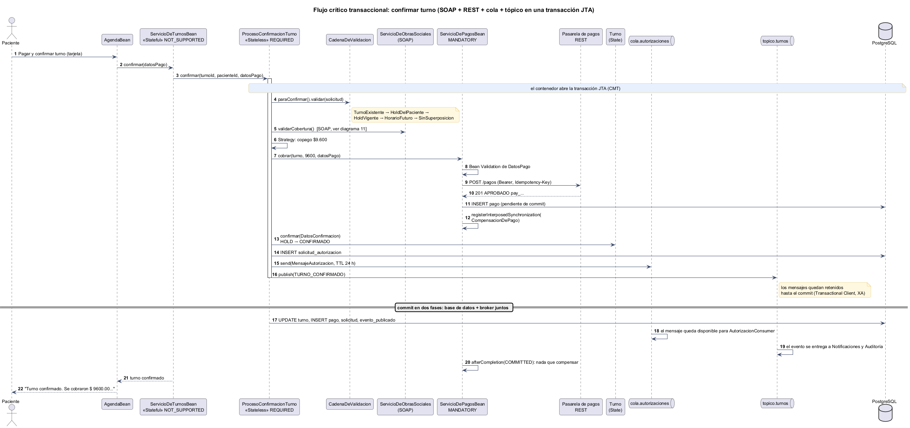
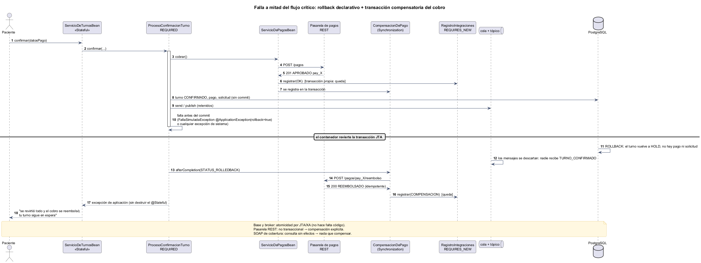
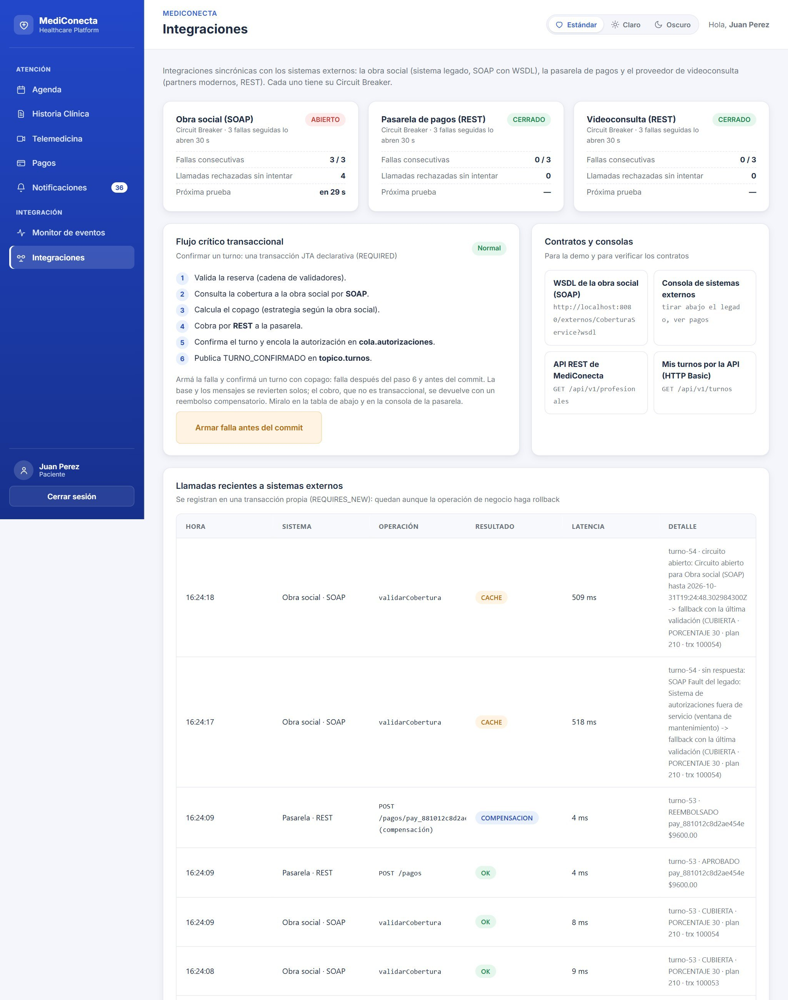
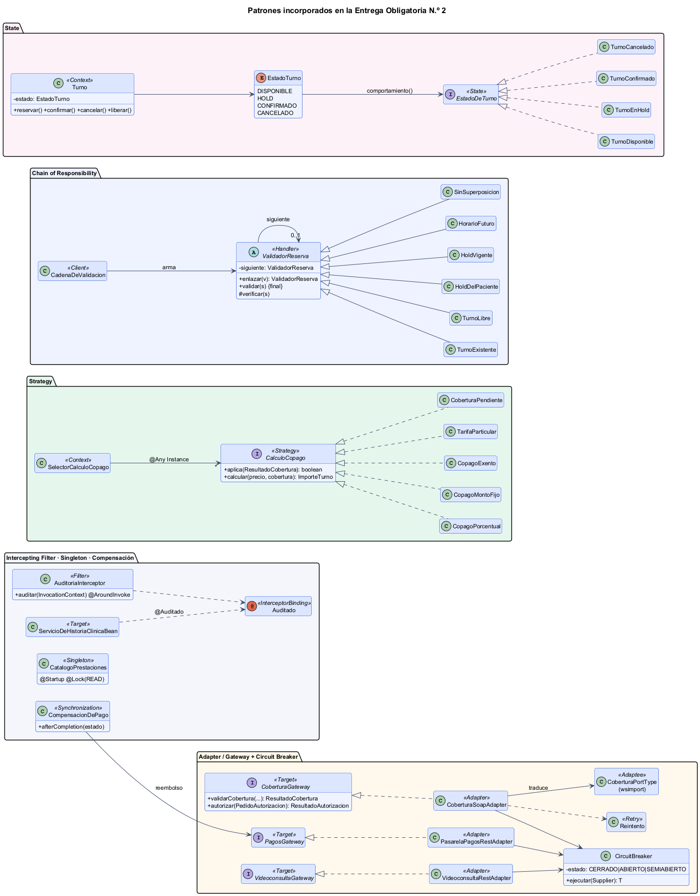
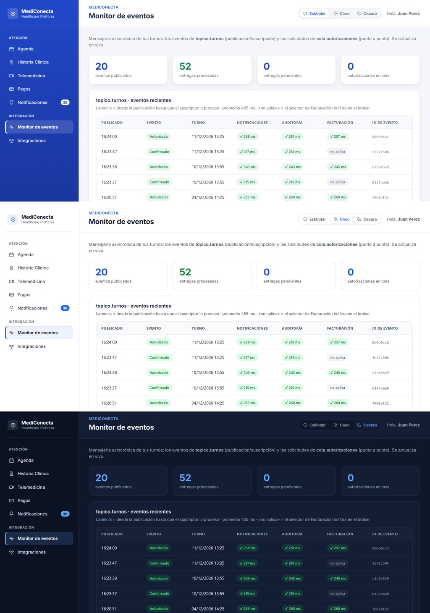

UADE
UNIVERSIDAD ARGENTINA DE LA EMPRESA
Facultad de Ingeniería y Ciencias Exactas
Departamento de Tecnología Informática
Trabajo Práctico: Desarrollo de Aplicaciones II
MediConecta: integración sincrónica, mensajería completa y transacciones
Entrega Obligatoria N.º 2 (2.º Parcial)
Grupo 4
Agustín Bodas, Máximo Bonarrico y Sergio Casanova
Universidad Argentina de la Empresa
3.4.218 Desarrollo de Aplicaciones II, Comisión Lunes TT
Prof. Matías Ruiz
9 de noviembre de 2026
MediConecta: integración sincrónica, mensajería completa y transacciones
Este documento acompaña la Entrega Obligatoria N.º 2 de MediConecta, la plataforma que conecta pacientes con profesionales de la salud para gestionar turnos presenciales y por telemedicina, con cobertura de obras sociales. La consigna de esta instancia pide demostrar el sistema integrado: al menos dos procesos de negocio con mensajería asincrónica (uno con cola punto a punto y otro con tópico), al menos un servicio SOAP con su WSDL justificado como integración con un sistema legado, al menos un servicio REST justificado como integración con un partner moderno o como API de consumo externo, y transacciones declarativas en un flujo crítico de varios pasos (Cátedra de Desarrollo de Aplicaciones II, 2026a). El anexo resume esta instancia como "integración sincrónica (SOAP y REST), mensajería completa y transacciones" y exige que cada entrega sume valor verificable respecto de la anterior (Cátedra de Desarrollo de Aplicaciones II, 2026b).
Respecto de la Entrega Parcial N.º 2, MediConecta pasó de seis a diez componentes de negocio, se integró con tres sistemas externos por HTTP real (uno SOAP y dos REST), expone su propia API REST, suma un segundo proceso asincrónico con cola y convierte la confirmación de un turno en un flujo transaccional de siete pasos que cruza la base de datos, el broker y dos servicios web. Además se implementaron los tres temas visuales del anexo, que se alternan en tiempo real. La Tabla 1 vincula cada requisito con la sección donde se explica y con la prueba que lo verifica.
Tabla 1
Requisitos de la Entrega Obligatoria N.º 2 y dónde se cumplen
| Requisito | Implementación | Verificación |
|---|
| Proceso asincrónico con cola punto a punto | cola.autorizaciones: autorización de prestaciones a la obra social, con consumidores en competencia (Parte III) | Prueba E4, escenarios D y G |
| Proceso asincrónico con tópico | topico.turnos con tres suscriptores durables, uno con selector (Parte III) | Prueba E4, D, E y H; prueba del monitor |
| Servicio SOAP con WSDL (sistema legado) | CoberturaService de la obra social, consumido con un cliente generado por wsimport (Parte II) | Prueba E4, A, C y G |
| Servicio REST (partner moderno / API externa) | Pasarela de pagos y videoconsulta como cliente; API /api/v1 propia como servidor (Parte II) | Prueba E4, B, C, F, H e I |
| Transacciones declarativas en un flujo crítico | ProcesoConfirmacionTurno.confirmar (REQUIRED) con compensación del cobro (Parte IV) | Prueba E4, escenario F |
| Temas claro, oscuro y estándar (opcional) | Variables CSS por tema y cambio en vivo sin recargar (Parte V) | Prueba E4, escenario K |
Nota. "Prueba E4" es pruebas/prueba_entrega4.py, que recorre la aplicación desplegada con un navegador real (36 verificaciones).
Parte I: Arquitectura integrada
Componentes del sistema
MediConecta sigue siendo un conjunto de componentes Jakarta EE 10 desplegados en WildFly 41 con el perfil standalone-full, que incluye el broker ActiveMQ Artemis (Eclipse Foundation, 2022). En esta entrega quedan implementados los ocho componentes candidatos que propone la consigna para el dominio, más dos de soporte: la agenda de consultas para la API y el monitoreo. Cada uno tiene una interfaz @Local explícita, su implementación EJB y sus DAO; las integraciones con terceros quedan detrás de un gateway, de modo que ningún servicio de negocio conoce SOAP ni HTTP. La Tabla 2 resume los componentes.
Tabla 2
Componentes de negocio de MediConecta
| Componente | Tipo | Responsabilidad e integración |
|---|
| ServicioDeUsuarios | Stateless | Registro y autenticación (PBKDF2), Factory de usuarios. |
| ServicioDeTurnos | Stateful | Conversación del hold de 5 minutos; delega la confirmación en ProcesoConfirmacionTurno. |
| ServicioDeHistoriaClinica | Stateless | Diagnósticos y recetas, con titularidad y auditoría de accesos. |
| ServicioDeObrasSociales | Stateless | Cobertura y autorización contra el legado (SOAP). |
| ServicioDePagos | Stateless | Cobros y reintegros por la pasarela (REST). |
| ServicioDeTelemedicina | Stateless | Salas de videoconsulta en el proveedor externo (REST). |
| ServicioDeNotificaciones | MDB + Stateless | Email al paciente y aviso al profesional por cada evento del tópico. |
| ServicioDeFacturacion | MDB + Stateless | Reclamos a la obra social y reintegros, con selector sobre el tópico. |
| ServicioDeAgenda | Stateless | Consultas sin estado conversacional para la API REST. |
| ServicioDeMonitoreo | Stateless | Monitor de eventos, cola, circuitos y bitácora de integraciones. |
La Figura 1 muestra cómo se conectan estos componentes entre sí y con los sistemas externos. A diferencia de la entrega anterior, todas las conexiones del diagrama están implementadas y funcionando.
Figura 1
Arquitectura de integración de MediConecta

Nota. Fuente PlantUML en docs/diagramas/01-integracion-soa.puml.
Clasificación de las integraciones
Mantenemos la regla de la entrega anterior: una integración es sincrónica cuando quien la inicia necesita la respuesta para continuar, y asincrónica cuando es una consecuencia que puede procesarse después o que le interesa a más de un componente (Hohpe y Woolf, 2003). Dentro de las sincrónicas, el protocolo lo impone el tercero: SOAP para el legado de la obra social y REST para los partners modernos. La Tabla 3 aplica la regla a cada integración, ahora todas implementadas.
Tabla 3
Clasificación justificada de las integraciones
| Integración | Tipo y canal | Justificación |
|---|
| Validación de cobertura | Sincrónica · SOAP | El paciente necesita saber cuánto paga antes de confirmar, y la obra social es un sistema legado que sólo expone SOAP. |
| Cobro del copago o del turno particular | Sincrónica · REST | Sin un cobro aprobado no se confirma un turno con importe; la pasarela es un servicio moderno con API REST. |
| Sala de videoconsulta | Sincrónica · REST | El profesional necesita el enlace en el momento de entrar. |
| API pública /api/v1 | Sincrónica · REST | Consumo externo por partners (cartilla y turnos del usuario). |
| Autorización de la prestación | Asincrónica · cola | Cada solicitud debe procesarse una sola vez, el legado puede tardar o estar caído y el paciente no necesita esperar la respuesta. |
| Notificaciones, auditoría y facturación | Asincrónica · tópico | Varios interesados que reaccionan al mismo evento sin conocerse; Facturación filtra con un selector. |
La validación de cobertura y la autorización son dos operaciones distintas del mismo legado, y resolverlas por canales distintos es una decisión de diseño. La primera es una consulta sin efectos cuya respuesta cambia lo que el paciente paga, así que es sincrónica y tiene un plan alternativo si el legado no responde. La segunda es un trámite administrativo que la obra social resuelve con su auditoría médica: modelarla como mensaje en una cola permite que el turno se confirme igual y que la autorización llegue cuando el legado esté disponible, sin perderse.
Sistemas externos
No hay una obra social, una pasarela ni un proveedor de video reales a los que conectarse, así que los simulamos en un proyecto Maven aparte (sistemas-externos/), desplegado como externos.war. Lo importante es que la integración no está simulada: MediConecta habla con ellos por HTTP, con el mismo contrato, autenticación y fallas que tendría un tercero. El simulador de la obra social publica su propio WSDL y valida un encabezado WS-Security; la pasarela exige una clave secreta y soporta Idempotency-Key; el proveedor de video exige una API key. Una consola web (/externos/) permite cambiar en vivo el estado de cada sistema (en línea, lento o caído) y ver los pagos recibidos, que es lo que usamos en la demo para mostrar cómo reacciona la plataforma.
Parte II: Integración sincrónica
SOAP con el sistema legado de la obra social
El legado expone el servicio CoberturaService (SOAP 1.1, estilo document/literal) con dos operaciones, descriptas en la Tabla 4. Su WSDL se publica en /externos/CoberturaService?wsdl y una copia vive en el repositorio de MediConecta (src/main/resources/wsdl), porque el contrato de un tercero no lo controlamos y no queremos depender de que esté en línea para compilar. A partir de esa copia, el plugin jaxws-maven-plugin genera el cliente con wsimport en cada build. Las clases generadas nunca salen del paquete de integración: el dominio habla con la interfaz CoberturaGateway y el adaptador CoberturaSoapAdapter traduce en los dos sentidos (patrones Gateway y Adapter; Fowler, 2002; Gamma et al., 1994). Si el legado cambia su contrato, se regenera el cliente y se ajusta una sola clase.
Tabla 4
Operaciones del servicio SOAP del legado
| Operación | Entrada | Salida |
|---|
| validarCobertura | obra social, plan, n.º de afiliado, código de prestación, fecha | estado (CUBIERTO, NO_CUBIERTO, AFILIADO_SUSPENDIDO…), tipo y valor de copago, si requiere autorización, n.º de transacción |
| solicitarAutorizacion | id de solicitud (clave de deduplicación), afiliado, prestación, matrícula del prestador | AUTORIZADA con código o RECHAZADA con motivo |
El legado sólo atiende a prestadores registrados. Implementamos el perfil UsernameToken de WS-Security (OASIS, 2006) con handlers estándar de JAX-WS en los dos extremos: del lado de MediConecta, UsernameTokenClientHandler agrega el encabezado wsse:Security a cada pedido; del lado del legado, un handler lo valida y, si falta o no coincide, responde un SOAP Fault wsse:FailedAuthentication sin ejecutar la operación.
Un sistema legado es justamente el que más probabilidades tiene de fallar o responder lento, y el desafío opcional de la consigna pide demostrar que, si un externo cae, el resto de la plataforma sigue funcionando. El adaptador aplica cuatro patrones de resiliencia en el mismo orden que MicroProfile Fault Tolerance (Nygard, 2018): un timeout de 2 segundos para conectar y 3 para responder; un reintento a los 500 ms, sólo en validarCobertura porque es una consulta sin efectos; un Circuit Breaker que tras tres fallas seguidas deja de llamar al legado durante 30 segundos; y un fallback que responde con la última validación exitosa (vigencia de 24 horas) o, si no la hay, con cobertura PENDIENTE. El documento de diseño preveía MicroProfile para esto, pero ese subsistema no está en el perfil standalone-full, que necesitamos por el broker; por eso aplicamos la alternativa que el propio documento contemplaba: un Circuit Breaker propio, con sus estados cerrado, abierto y semiabierto, probado con pruebas unitarias. La Figura 2 muestra la secuencia completa.
Figura 2
Secuencia de la integración SOAP: cotización del turno

Con cobertura pendiente el turno se confirma sin cobro y la cola de autorizaciones termina de resolverlo cuando el legado vuelve. En la demo esto se ve tirando abajo el legado desde la consola: la cotización informa que se usó la caché o que la cobertura quedó pendiente, el circuito figura ABIERTO en el panel de integraciones (Figura A2) y la confirmación funciona igual.
REST con los partners modernos y API propia
MediConecta usa REST en los dos sentidos. Como cliente, consume la pasarela de pagos y el proveedor de video con el cliente estándar de JAX-RS y JSON-B, cada uno detrás de su gateway y con su propio Circuit Breaker. Con la pasarela hay dos decisiones que vale la pena justificar. La primera es el reintento seguro: cada cobro lleva un Idempotency-Key propio, así que si la respuesta se pierde y el adaptador reintenta, la pasarela devuelve el mismo pago en lugar de cobrar dos veces. La segunda es que, a diferencia de la cobertura, no hay fallback: confirmar un turno particular sin cobrarlo sería regalar la consulta, así que si la pasarela no responde el turno sigue en espera y el paciente puede reintentar. Un pago rechazado (por ejemplo, fondos insuficientes) es una respuesta válida y no abre el circuito.
Como servidor, MediConecta expone una API REST de consumo externo pensada para partners como un portal de salud o la aplicación de una obra social (Tabla 5). Los recursos son EJB sin estado, de modo que la seguridad declarativa (@RolesAllowed, @PermitAll) se aplica directamente sobre cada operación. La autenticación es HTTP Basic sobre el mismo identity store de la aplicación web, sin crear sesión. Las respuestas son objetos de transferencia armados por un ensamblador, nunca entidades, y un ExceptionMapper traduce cualquier error a un JSON uniforme sin trazas ni nombres internos.
Tabla 5
API REST de MediConecta
| Operación | Acceso | Respuesta |
|---|
| GET /api/v1/profesionales | Pública | Cartilla: nombre, especialidad, matrícula. |
| GET /api/v1/profesionales/{id}/disponibilidad | Pública | Horarios libres con modalidad, código de prestación y precio. |
| GET /api/v1/turnos | Paciente o profesional | Turnos del usuario autenticado; 401 con WWW-Authenticate si no hay credenciales. |
| GET /api/v1/turnos/{id} | Paciente o profesional | El turno, sólo si es del usuario; si es ajeno responde 404, igual que si no existiera. |
Figura 3
Secuencias REST: API propia (servidor) y videoconsulta (cliente)

Parte III: Mensajería asincrónica completa
El sistema tiene ahora dos procesos de negocio asincrónicos de punta a punta, uno por cada estilo de canal, sobre el broker Artemis embebido. La Tabla 6 resume los recursos configurados; el script wildfly/configurar-mensajeria.cli deja listo un servidor nuevo y configurar-integracion-entrega4.cli agrega la cola a uno que ya tenía la configuración anterior.
Tabla 6
Recursos de mensajería
| Recurso | Configuración |
|---|
| topico.turnos | Eventos TURNO_CONFIRMADO, TURNO_CANCELADO, TURNO_AUTORIZADO y AUTORIZACION_RECHAZADA. Tres suscripciones durables: notificaciones, auditoria y facturacion (con selector). Tres intentos y DLQ. |
| cola.autorizaciones | Point-to-Point Channel. Mensajes persistentes con vencimiento de 24 horas. Ocho intentos con espera creciente (10, 20, 40 y luego 60 segundos), después DLQ; los vencidos van a ExpiryQueue. |
| AutorizacionConsumer | MDB con maxSession=2: dos sesiones compiten por los mensajes de la cola. |
Proceso con cola punto a punto
Cuando un paciente con obra social confirma un turno, la misma transacción que lo confirma registra una solicitud de autorización y envía un mensaje a cola.autorizaciones. Del otro lado, AutorizacionConsumer lo procesa: verifica que no lo haya procesado antes (Idempotent Receiver, con la misma tabla evento_procesado de la entrega anterior), pide la autorización al legado por SOAP y, en una única transacción, marca la solicitud como resuelta, actualiza el turno y publica TURNO_AUTORIZADO o AUTORIZACION_RECHAZADA en el tópico. Consumir, actualizar y publicar ocurren juntos o no ocurren.
Si el legado no responde, el consumidor no confirma el mensaje (setRollbackOnly) y el broker lo reentrega con espera creciente; mientras el circuito está abierto los intentos fallan al instante sin colgar hilos. Cuando el legado vuelve, el siguiente intento lo resuelve. La cola tiene dos consumidores en competencia (Competing Consumers): ante un pico de confirmaciones el broker reparte los mensajes y cada uno lo procesa una sola sesión, lo que el monitor muestra en la columna "Consumidor". Como un MDB no tiene un usuario que lo invoque, corre con la identidad técnica SISTEMA (@RunAs), el único rol autorizado para pedir autorizaciones al legado. La Figura 4 muestra la secuencia con el legado caído.
Figura 4
Secuencia de la cola de autorizaciones con el legado caído

La garantía de entrega quedó probada, además, por accidente. En la primera versión el consumidor era rechazado por la seguridad de WildFly, que deniega por defecto los métodos sin permisos explícitos en un bean que declara roles. El broker reintentó cuatro veces, con 10, 20 y 40 segundos de espera; corregimos el permiso (@PermitAll en el MDB, que el contenedor invoca sin usuario) y la solicitud se resolvió en el quinto intento, sin perderse y sin intervención manual.
Proceso con tópico y consumidor selectivo
El proceso de la entrega anterior sigue funcionando y creció sin tocar al productor, que es la ventaja de un Publish-Subscribe Channel: se sumaron los dos eventos de autorización y un tercer suscriptor, Facturación. Facturación sólo necesita dos eventos, así que su suscripción usa el selector tipoEvento IN ('TURNO_AUTORIZADO','TURNO_CANCELADO') sobre una propiedad que el productor pone en la cabecera (Selective Consumer): el broker filtra el resto y esos mensajes ni siquiera llegan a su cola de suscripción. Con TURNO_AUTORIZADO genera el reclamo a la obra social por la parte que le corresponde; con TURNO_CANCELADO anula el reclamo y reintegra el pago del paciente por REST (Figura 5). El monitor de eventos muestra una columna por suscriptor y "no aplica" donde el selector filtró el evento (Figura A1).
Figura 5
Secuencia de la cancelación con reintegro asincrónico

El reintegro se hace en Facturación, después del commit de la cancelación, y no dentro de la cancelación misma. Si se devolviera el dinero dentro de la transacción y la cancelación fallara después, el paciente tendría el turno y el dinero. Hacerlo al consumir el evento garantiza que sólo se reintegra una cancelación que se concretó; si la pasarela está caída, el mensaje se reintenta y el reintegro es idempotente, así que no se devuelve dos veces.
Parte IV: Transacciones declarativas
El flujo crítico de confirmación
La consigna pide transacciones declarativas en un flujo crítico de varios pasos, como uno que involucre reservar, cobrar y confirmar. En MediConecta ese flujo es la confirmación del turno, implementada en ProcesoConfirmacionTurno.confirmar, un EJB sin estado con atributo REQUIRED: el contenedor abre una transacción JTA al entrar y la confirma al salir, sin una sola línea de código de demarcación (container-managed transactions). Los pasos son siete: validar la reserva con una cadena de validadores, consultar la cobertura por SOAP, calcular el copago con la estrategia de la obra social, cobrar por REST, confirmar el turno, encolar la solicitud de autorización y publicar el evento (Figura 6). El hold previo lo mantiene el bean con estado de turnos, que delega en este proceso; por eso la conversación usa NOT_SUPPORTED y la frontera transaccional queda en un solo lugar.
Figura 6
Secuencia del flujo crítico de confirmación

No todos los métodos que participan necesitan la misma semántica, y elegirla fue parte del diseño. La Tabla 7 resume los atributos usados y por qué.
Tabla 7
Atributos de transacción usados y su justificación
| Atributo | Dónde | Por qué |
|---|
| REQUIRED | ProcesoConfirmacionTurno.confirmar, los MDB, la cancelación | Una operación de negocio es una transacción: todo o nada. |
| MANDATORY | ServicioDePagosBean.cobrar | Cobrar sólo tiene sentido dentro de una confirmación, porque de esa transacción depende la compensación; llamarlo sin transacción es un error y el contenedor lo rechaza. |
| SUPPORTS | validarCobertura | Consulta remota sin efectos: se une a la transacción si la hay y no abre una propia. |
| NOT_SUPPORTED | Cotización y conversación del bean con estado | No se retiene una conexión a la base mientras se espera al legado; la transacción la abre el proceso. |
| REQUIRES_NEW | RegistroIntegraciones, registro de accesos | La bitácora debe quedar aunque la operación de negocio haga rollback. |
Comportamiento ante una falla a mitad del flujo
Si cualquier paso falla, el contenedor revierte la transacción. Lo interesante es qué significa "revertir" para cada recurso, porque no todos participan de la transacción (Tabla 8). La base de datos y el broker sí: el envío JMS usa la fábrica de conexiones XA de WildFly y se enlista en la misma transacción (Transactional Client; Hohpe y Woolf, 2003), así que ante un rollback el turno vuelve a quedar en espera y ni la solicitud de autorización ni el evento llegan a salir. La pasarela, en cambio, es un servicio REST que no participa de la transacción: si la falla ocurre después de cobrar, el dinero ya se movió.
Tabla 8
Efecto de un rollback del flujo crítico sobre cada recurso
| Recurso | Qué pasa ante un rollback |
|---|
| Base de datos (turno, pago, solicitud, evento publicado) | Se revierte sola (JTA). |
| Mensajes a la cola y al tópico | No se entregan nunca (envío XA dentro de la transacción). |
| Cobro en la pasarela (REST) | Se devuelve con un reembolso compensatorio. |
| Consulta de cobertura (SOAP) | Es una consulta sin efectos: no hay nada que compensar. |
| Bitácora de integraciones y accesos | Queda registrada (REQUIRES_NEW). |
Para el cobro aplicamos una transacción compensatoria, la idea de las sagas (Garcia-Molina y Salem, 1987): al aprobarse el cobro, el servicio de pagos registra en la transacción en curso una Synchronization (CompensacionDePago) a través del TransactionSynchronizationRegistry. El contenedor la invoca al terminar la transacción y, si el resultado no fue un commit, pide el reembolso a la pasarela. La Figura 7 muestra la secuencia.
Figura 7
Secuencia de una falla antes del commit: rollback y compensación

Dos detalles sostienen este comportamiento. Las reglas de negocio se lanzan como excepciones de aplicación con rollback=true, que revierten la transacción sin destruir la instancia del bean con estado, así que el paciente conserva su hold y puede reintentar; y si ocurre un error de sistema dentro del proceso, la conversación lo traduce a una excepción de aplicación por la misma razón. Como red de seguridad, un temporizador del contenedor libera cada minuto los holds vencidos, por si un reinicio del servidor dejara un turno retenido.
Para demostrarlo en vivo, el panel de integraciones permite armar una falla que se dispara al final del flujo, después de todos los pasos y antes del commit. Al confirmar un turno con copago, el paciente ve que la operación se revirtió, el turno sigue en espera, la consola de la pasarela muestra el pago REEMBOLSADO y la bitácora registra el cobro y su compensación, que sobreviven al rollback (Figura A2).
Parte V: Patrones, seguridad e interfaz
Patrones de diseño incorporados
El documento de diseño de patrones y seguridad del grupo planificaba, para esta entrega, un conjunto de patrones con el problema concreto que resuelve cada uno. La Tabla 9 resume los que se implementaron y la Figura A3 los muestra en un diagrama de clases. Los patrones de las entregas anteriores (DAO, Session Facade, Factory, Builder, Template Method, Transfer Object, Transactional Client, Durable Subscriber, Idempotent Receiver y Dead Letter Channel) siguen vigentes.
Tabla 9
Patrones incorporados en esta entrega
| Patrón | Problema que resuelve | Clases |
|---|
| Adapter / Gateway | Aislar al dominio de los contratos SOAP y REST de terceros. | CoberturaSoapAdapter, PasarelaPagosRestAdapter, VideoconsultaRestAdapter |
| Circuit Breaker, Retry, Fallback con caché | Que la caída de un externo no tumbe la plataforma. | CircuitBreaker, Reintento |
| Strategy | Cada obra social calcula el copago distinto. | CalculoCopago y cinco estrategias |
| Chain of Responsibility | Reglas de reserva que cambian y se combinan. | ValidadorReserva y seis eslabones |
| State | Transiciones válidas del turno sin un switch repetido. | EstadoTurno, TurnoDisponible, TurnoEnHold, etc. |
| Intercepting Filter | Registrar cada acceso a la historia clínica sin repetir código. | @Auditado, AuditoriaInterceptor |
| Singleton (EJB) | Catálogo de prestaciones leído en cada cotización. | CatalogoPrestaciones |
| Point-to-Point, Competing Consumers, Selective Consumer, Message Expiration | Procesar cada autorización una sola vez, absorber picos y filtrar eventos. | AutorizacionConsumer, FacturacionSubscriber |
| Transacción compensatoria | Deshacer un efecto no transaccional (el cobro REST). | CompensacionDePago |
Hubo tres diferencias con lo planificado, todas por razones concretas. El Circuit Breaker es propio y no de MicroProfile, por lo explicado en la Parte II. La fachada transaccional se llama ProcesoConfirmacionTurno y no TurnoFacade, porque el bean con estado de turnos ya era la fachada de la reserva desde la primera entrega y no quisimos duplicar ese rol. Y la autorización y la revalidación de cobertura, que el diseño separaba en dos colas, se unificaron en una: autorizar implica que el legado vuelva a validar la cobertura, así que una segunda cola no aportaba comportamiento. El decorador de enmascarado de datos quedó para la Entrega Final, como estaba previsto.
Seguridad
La limitación más importante que habíamos documentado en la entrega anterior era que la titularidad de la historia clínica se controlaba sólo en la vista. Ahora la garantiza el servicio: un paciente sólo accede a su historia y un profesional sólo a la de pacientes con un turno confirmado con él, y cada intento, permitido o denegado, lo registra el interceptor de auditoría en una transacción propia. El paciente puede ver en su historia qué profesional la consultó y cuándo, en línea con la confidencialidad que exige la Ley 26.529 (2009).
El resto de las medidas acompaña las integraciones: HTTP Basic sobre el identity store para la API, con @RolesAllowed en cada recurso y 404 para recursos ajenos, que evita revelar identificadores (IDOR); WS-Security con UsernameToken hacia el legado; la identidad técnica SISTEMA para los MDB, que es el único rol que puede pedir autorizaciones, emitir reclamos o reintegrar pagos; Bean Validation sobre los datos de la tarjeta en la vista y otra vez en el servicio antes de llamar a la pasarela; y el número de tarjeta, que viaja a la pasarela y nunca se guarda (sólo la marca y los últimos cuatro dígitos). Los eventos y mensajes siguen sin datos clínicos, como exige la Ley 25.326 (2000) para datos sensibles.
Temas visuales en tiempo real
El anexo propone, como punto extra, implementar los temas claro, oscuro y el estándar de la aplicación, alternables en tiempo real. Rehicimos la hoja de estilos para que todos los colores salgan de variables CSS (tokens de diseño); cada tema sólo redefine esas variables según el atributo data-tema del documento. El selector, presente en la barra superior y en el inicio de sesión, cambia ese atributo con JavaScript y el navegador recalcula la página al instante, sin recargarla ni perder lo que el usuario estaba haciendo. La elección se guarda en una cookie, que el servidor lee para dibujar las páginas siguientes ya con el tema elegido, y en el almacenamiento local, que sincroniza otras pestañas abiertas. El servidor valida el valor contra una lista cerrada, así que una cookie manipulada no puede inyectar contenido en la página. La Figura A4 muestra la misma pantalla en los tres temas.
Pruebas y resultados
Probamos en tres niveles, siempre contra WildFly 41 con el perfil completo y la base real en Supabase. Las pruebas unitarias cubren la lógica de los patrones sin contenedor, incluido el Circuit Breaker con un reloj controlado; las de navegador recorren la aplicación desplegada como lo haría un usuario y verifican también los efectos asincrónicos. La Tabla 10 resume los resultados de la última corrida, del 31 de octubre de 2026.
Tabla 10
Pruebas automatizadas y resultados
| Prueba | Qué verifica | Resultado |
|---|
| Unitarias (JUnit 5, mvn package) | State, Strategy, Chain of Responsibility, Circuit Breaker, Retry, Builder, selector de Facturación y catálogo. | 26 de 26 |
| pruebas/prueba_entrega4.py | Escenarios A a K de esta entrega: WSDL, API REST, pago rechazado y aprobado, cola, selector, falla con compensación, legado caído, cancelación con reintegro, telemedicina, auditoría y temas. | 36 de 36 |
| pruebas/prueba_e2e.py | Recorrido de la entrega anterior adaptado al pago del copago. | 13 de 13 |
| pruebas/prueba_monitor.py | Monitor con un suscriptor detenido desde la consola de WildFly y titularidad. | 7 de 7 |
Los escenarios de falla dieron el resultado esperado. Con la falla armada, el turno no quedó confirmado, la cantidad de turnos del paciente no cambió, la pasarela registró el pago como reembolsado con el motivo de la reversión y la bitácora conservó el cobro y la compensación. Con el legado caído, la cotización usó la caché, el circuito se abrió, el turno se confirmó igual y la solicitud de autorización quedó en cola hasta que el legado volvió, momento en que se autorizó sola. Las pruebas también encontraron errores reales que corregimos antes de entregar, como el permiso del consumidor de la cola ya mencionado y un evento de la entrega anterior que el monitor marcaba como pendiente para Facturación, una suscripción que en ese momento no existía; ahora cada evento guarda qué suscripciones debían recibirlo al publicarse.
Limitaciones y trabajo futuro
Preferimos documentar lo que todavía falta antes que dejar que aparezca en la defensa. La aplicación corre sobre HTTP y no HTTPS; el UsernameToken viaja con la contraseña en texto (perfil PasswordText), aceptable sólo sobre TLS, y en producción correspondería el perfil con resumen. Las credenciales de los sistemas externos son de prueba y se pueden cambiar por propiedades del sistema, pero deberían vivir en el almacén de credenciales de Elytron. Si el reembolso compensatorio falla porque la pasarela también cayó, el caso queda registrado para conciliación manual; el siguiente paso sería encolarlo para reintentarlo. Los tres sistemas externos son simuladores. El administrador de clínica, el decorador de enmascarado, los tokens JWT para la API y el cifrado de columnas sensibles quedan para la Entrega Final.
Conclusiones
Esta entrega cambió la naturaleza del sistema: hasta ahora todo pasaba dentro de MediConecta, y desde ahora una confirmación depende de tres empresas que no controlamos. Eso nos obligó a pensar cada integración desde la falla y no desde el caso feliz: qué pasa si el legado no responde, si la pasarela cobra y después algo se rompe, si un mensaje llega dos veces. Las respuestas terminaron siendo decisiones de diseño concretas y defendibles: fallback para la cobertura pero no para el cobro, la autorización por cola en lugar de esperarla, el reintegro después del commit y una compensación donde la transacción no llega.
La otra conclusión es que las transacciones declarativas resuelven mucho pero no todo. El contenedor coordina la base y el broker sin que escribamos una línea de demarcación, y justamente por eso hay que saber con precisión dónde termina esa garantía: en el borde del primer servicio REST. Para la Entrega Final quedan la consolidación de la documentación, la seguridad pendiente y la reflexión del equipo sobre qué decisiones cambiaríamos.
Referencias
Alur, D., Crupi, J. y Malks, D. (2003). Core J2EE patterns: Best practices and design strategies (2.ª ed.). Prentice Hall.
Apache Software Foundation. (s.f.). ActiveMQ Artemis documentation. https://activemq.apache.org/components/artemis/documentation/
Cátedra de Desarrollo de Aplicaciones II. (2026a). Trabajo práctico integrador: Consigna general y cronograma de entregas [Material de cátedra]. Universidad Argentina de la Empresa.
Cátedra de Desarrollo de Aplicaciones II. (2026b). Anexo: Aclaraciones y requisitos complementarios al TP Integrador [Material de cátedra]. Universidad Argentina de la Empresa.
Eclipse Foundation. (2022). Jakarta EE Platform 10. https://jakarta.ee/specifications/platform/10/
Fowler, M. (2002). Patterns of enterprise application architecture. Addison-Wesley.
Gamma, E., Helm, R., Johnson, R. y Vlissides, J. (1994). Design patterns: Elements of reusable object-oriented software. Addison-Wesley.
Garcia-Molina, H. y Salem, K. (1987). Sagas. ACM SIGMOD Record, 16(3), 249–259.
Hohpe, G. y Woolf, B. (2003). Enterprise integration patterns: Designing, building, and deploying messaging solutions. Addison-Wesley.
Ley 25.326 de Protección de los Datos Personales. (2000). Boletín Oficial de la República Argentina.
Ley 26.529 de Derechos del Paciente en su Relación con los Profesionales e Instituciones de la Salud. (2009). Boletín Oficial de la República Argentina.
Nygard, M. T. (2018). Release it! Design and deploy production-ready software (2.ª ed.). Pragmatic Bookshelf.
OASIS. (2006). Web Services Security: UsernameToken profile 1.1. https://docs.oasis-open.org/wss/v1.1/
Apéndice A
Evidencias de la aplicación funcionando
Capturas tomadas sobre la aplicación desplegada en WildFly 41 con la base real, durante la última corrida de las pruebas (31 de octubre de 2026). Complementan las Partes III a V.
Figura A1
Monitor de eventos: tópico con tres suscriptores y cola de autorizaciones

Nota. Facturación figura "no aplica" en las confirmaciones porque su selector las filtra en el broker. La latencia de 5813 ms en Auditoría corresponde a una prueba con ese suscriptor detenido desde la consola de WildFly.
Figura A2
Panel de integraciones después de la falla y con el legado caído

Nota. Arriba, el circuito de la obra social ABIERTO tras tres fallas. En la bitácora: el cobro aprobado y su reembolso COMPENSACION, y las consultas resueltas desde la caché mientras el legado estaba caído.
Figura A3
Diagrama de clases de los patrones incorporados

Figura A4
La misma pantalla en los temas estándar, claro y oscuro

Apéndice B
Declaración de uso de inteligencia artificial generativa
De acuerdo con la consigna del trabajo práctico (Cátedra de Desarrollo de Aplicaciones II, 2026a), declaramos que en esta entrega usamos Claude, un asistente de inteligencia artificial generativa desarrollado por Anthropic, como herramienta de productividad: para generar el código base de las integraciones SOAP y REST, de los simuladores de los sistemas externos, de la cola de autorizaciones y de los temas visuales; para configurar el broker en WildFly; para escribir las pruebas unitarias y de navegador; para generar los diagramas a partir del código; y para redactar un primer borrador de este documento.
El grupo revisó el contenido contra el código y contra el comportamiento real de la aplicación, y todos los resultados informados surgen de pruebas ejecutadas sobre el sistema desplegado. Cada integrante está en condiciones de explicar y defender cualquier parte del trabajo.